Dynareg - Extra stock of correction document (Stock in / Stock out) document type)
Dynareg - Extra stock of correction document (Stock In / Stock Out document type)
Extra stock of correction document
|
|
Dynareg - Extra stock of correction document - Shop - Licence : Once-off - Extra stock of correction document plugin add the "Stock in / out" as an additional document type. Enable : "Documenten - Extra stock of correction document" Documentation : Help documentation - Stock in and Stock out document types Documentation : Help documentation - Stock in document type BUG - Disables the Ledger tab of all Stock items- See - Dynareg - Extra documnent types - BUG - Stock items - |

Extra voorraad correctiedocument
Een extra document type om voorraad correcties of eigen verbruik te verklaren.
Translation
Extra stock of correction document
An additional document type to declare stock corrections or self-consumption.
Creates a Stock in / Stock out document type
|
|
Dynareg - Separate Item Issue Plugin - Shop - Licence : Once-off - Enable : "Aparte artickel uitgifte" |

Document grid - Search and Filter options
Previous stock adjustments
Any stock adjustments, including Auto correction, Surpluses, and Shortages, processed before activating this plugin, will be listed on the document grid under the Stock In / Out document type.
These adjustments would have been made using the Input → Adjust stock menu or by manually changing stock quantities on the stock item grid.
The document numbers for these stock adjustments consist of 7 digits and include 'ST' as the prefix.
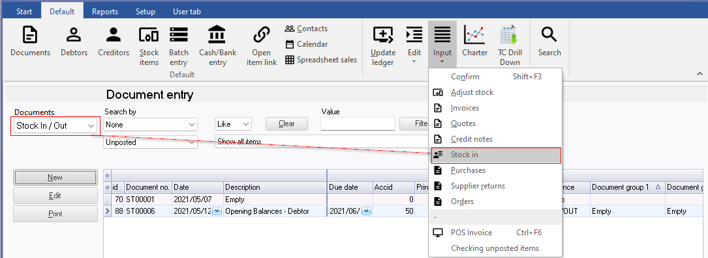
Filter and Search options
For the Stock in and Stock out document types, utilize the powerful grid for filtering and searching. Some of the available options include:
- Document status: Filter by Unposted, Posted, or view All documents.
- Groups: Filter for specific document groups.
- Document details: Access all available document details, including references, dates, and more.
Additionally, you can build custom filters tailored to your specific needs.
Stock In / Out document type
The "Stock In / Out" document type resembles the "Invoice" document type. To create a new document for the Stock In / Out document type, click New. On the "Debtor accounts" screen, select a debtor (customer/client) account and click Open. If no account exists, you may create a new debtor account.
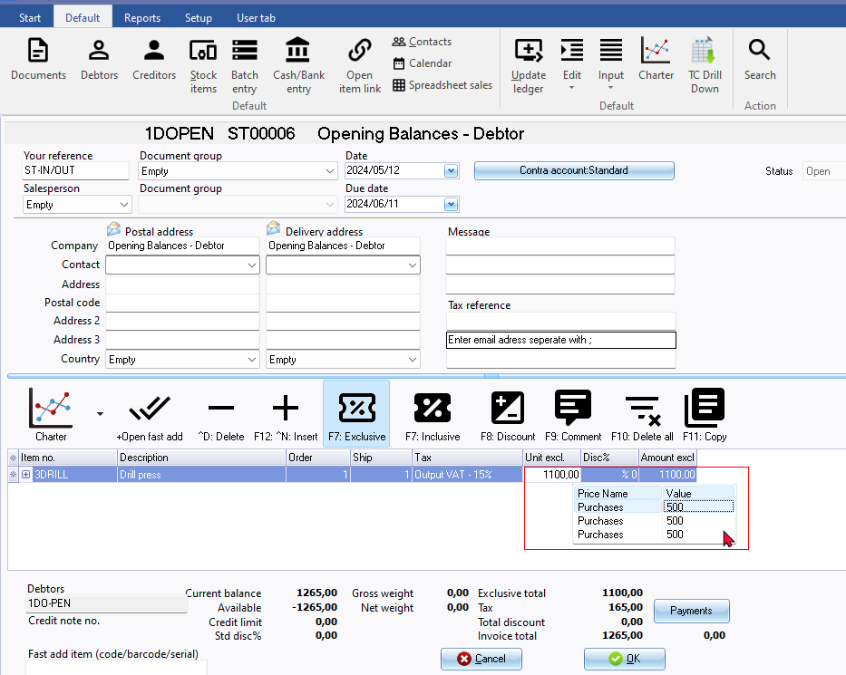
NOTE : Selling price - No selling prices 1 / 2 / 3. Shows cost prices for Purchases.
On the Stock In / Out document entry screen, select the stock item. You may enter references in the "Your reference" field in the document header. Additionally, you can include remarks and comments:
- Remarks: Beneath each stock item, you can add remarks. These remarks will print in document layout files but are not searchable in the central search.
- Comments: Use the F9: Comment option to enter comments for each item.
The document references entered in the "Your reference" field in the document header, along with the comments, are searchable using the central search option (accessible via the Search on the Default ribbon).
Input → Stock in menu (Stock in / Out document type)
Input → Stock in menu launches a stand-alone screen.
Document entry loose standing grid
NOTE :
- The existing documents created for the Stock In / Out document type using the Input → Stock in menu, within the Stock items grid is not listed.
- New document - Select the "Debtor accounts"
- Document number - Invoice document number is created for example "IN000025" (an 8 digit document number) and not for example "ST00001" (a 7 digit document number) as is created for the Stock In / Out document type within the Stock items grid.
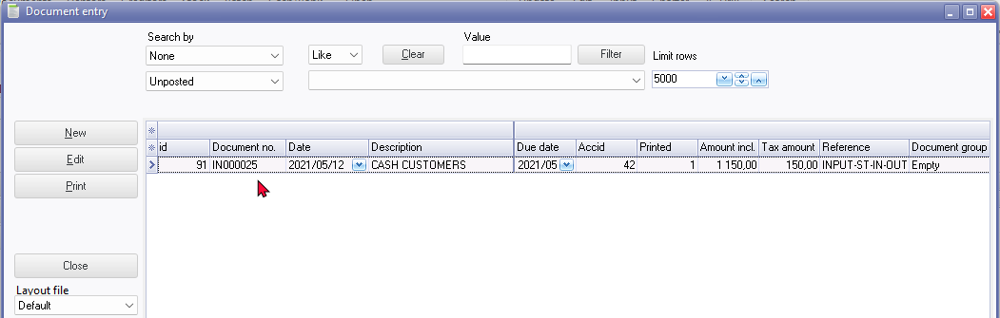
Document entry - New document
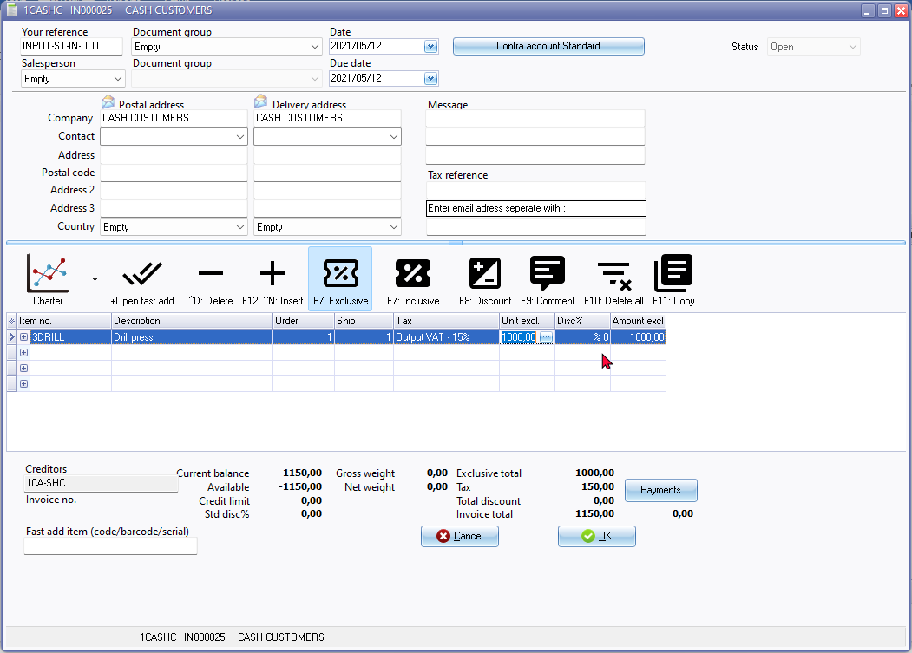
NOTE :
- Stock In document can be printed
- Stock In document entry lines - cannot select stock item sometimes a double click works but +Open fast add easy select and add an item.
- Selling price - No selling prices 1 / 2 / 3.
- Stock item - Unposted document number available - The Stock In / Out document created from the Input → Stock in menu cannot be posted, but is available as an unposted document in the Document groups tab of the Stock item. You may:
- Print the document - Double-click to print the document.
- Open document - Right-click to open the document. NOTE - The unposted document entry screen cannot be edited from this option.
- Debtors - Unposted document number available -
- Stock items tab NOTE : Refers to Assemble in the "Document type" column. Should refer to Stock In / Out as the document type.

NOTE : This also reflect as the BOM (Production) stock item type in Reports → Stock → Stock In / Out - "Documents" report:
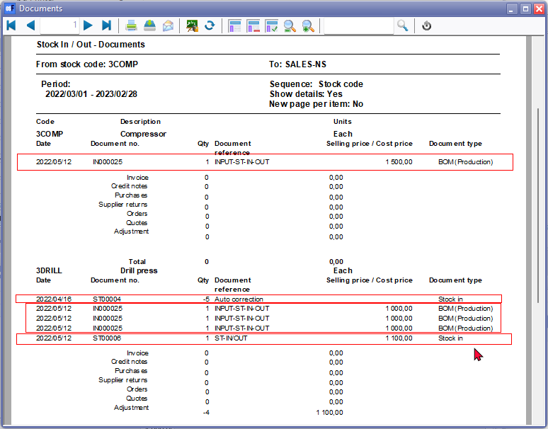
This report includes both posted and unposted documents processed with the Stock In / Stock out document type. Any stock adjustments, including Auto correction, Surpluses, and Shortages, processed before activating this plugin, will be listed on the document grid under the Stock In / Out document type. These adjustments would have been made using the Input → Adjust stock menu or by manually changing stock quantities on the stock item grid. The document numbers for these stock adjustments consist of 7 digits and include 'ST' as the prefix.
NOTE : The posted StockIn / Out Stock item type reflects the "Stock in" stock item type in Reports → Stock → Stock In / Out - "Stock In / Out" report:
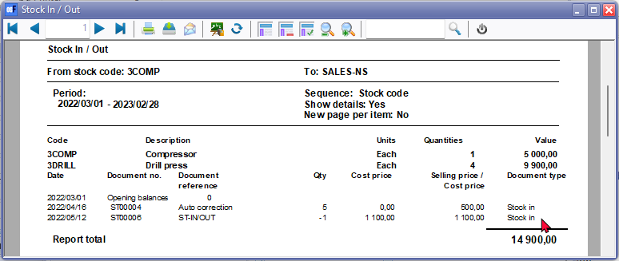
- Documents tab
- Document number not available - The Stock In / Out document created from the Input → Stock in menu can not be found on the following:
- Stock item grid - all document types, including the Stock In / Out document type.
- Input → Update documents (F3) - Title bar caption refers to "Delete orders" Any stock adjustments, including Auto correction, Surpluses, and Shortages, processed before activating this plugin, will be listed on the document grid under the Stock In / Out document type. These adjustments would have been made using the Input → Adjust stock menu or by manually changing stock quantities on the stock item grid. The document numbers for these stock adjustments consist of 7 digits and include 'ST' as the prefix.
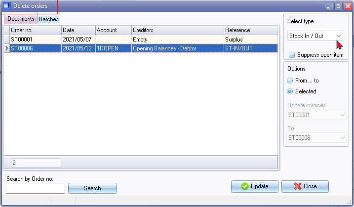
- Edit → Delete documents - Title bar caption refers to "Delete orders". Any stock adjustments, including Auto correction, Surpluses, and Shortages, processed before activating this plugin, will be listed on the document grid under the Stock In / Out document type. These adjustments would have been made using the Input → Adjust stock menu or by manually changing stock quantities on the stock item grid. The document numbers for these stock adjustments consist of 7 digits and include 'ST' as the prefix.
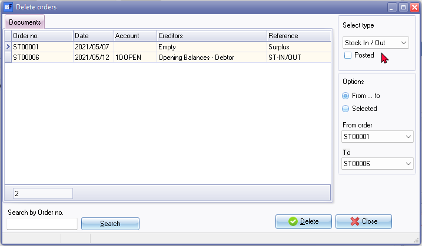
Update to ledger
If the "Auto-post document on print" setting on the Documents setup in the Setup menu (accessible via the Setup ribbon) is not activated, or if you have not yet printed the document, you will need to manually post the Stock In / Out documents.
To do this, press F3 or select Update Ledger on the Default ribbon. The "Update Invoices" screen is displayed:
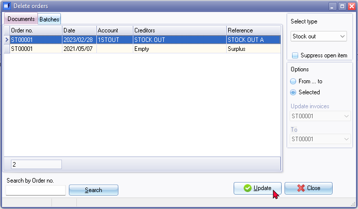
Select the Stock In / Out document type and click Update.
View the posted transactions
Once the Stock in and Stock out documents have been posted (updated to the ledger), you may view the transactions in the following options:
Stock items (Default ribbon)
Includes the Stock in and / or Stock out document types if processed for the selected stock item.
Document groups tab
This will include posted as well as unposted documents for the Stock in and Stock out document types.
- Double-click to print the selected document or choose a different layout file.
- Right-click to open the document entry screen in a separate window. Note that both posted and unposted documents cannot be edited.
Transactions tab
This will only include posted documents for the Stock in and Stock out document types.
- Right-click and select "Open document" from the context menu. Note that posted documents cannot be edited.
Debtors (Default Ribbon)
The Stock out document type should be listed since you can only select a debtor account.
Documents tab
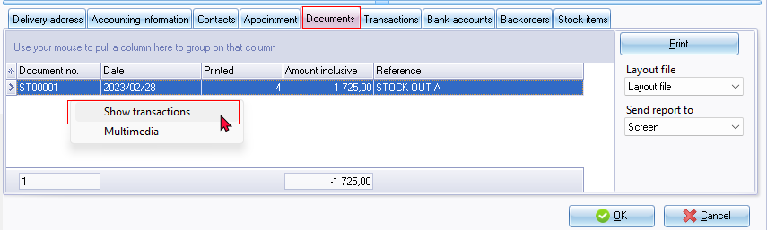
- Includes both posted and unposted documents for the Stock out document type.
- Here, you may:
- Print the document layout file: Double-click to print the selected document or click the Print button. You may select a different layout file.
- View and Print transactions: Right-click and select "Show transactions" on the context menu. This lists the transactions on a "Transactions" screen for the selected document. Note: For the Stock out document type, the quantities will be adjusted, and the transactions for cost of sales will be adjusted in a journal. Additionally, for the Stock in document type, the "Transactions" screen may be empty, as it primarily adjusts quantities. For the Stock out document type, the cost of sales transactions, will be listed the "Transactions" screen.
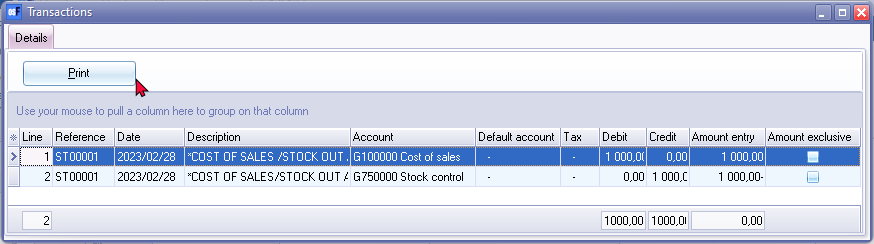
Clicking the Print button will print a "Batch type report - Posted batches". If an unposted batch is selected, the "Transactions" screen will be blank.
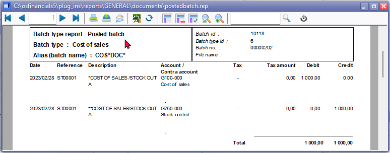
Stock item tab
- Includes both posted and unposted documents for the Stock out document type.
- The stock out document type numbers will consist of 7 digits of which the first two is prefixed with "ST" .The document type for the Stock out is indicated as "Stock+"
Creditors (Default Ribbon)
The Stock in document type should be listed since you can only select a creditor account.
Documents tab

- Includes both posted and unposted documents for the Stock in document type.
- Here, you may:
- Print the document layout file: Double-click to print the selected document or click the Print button. You may select a different layout file.
- View and Print transactions: Right-click and select "Show transactions" on the context menu. This lists the transactions on a "Transactions" screen for the selected document. Note: for Stock In document type, the "Transactions" screen may be empty, as it primarily adjusts quantities.
Stock item tab
- Includes both posted and unposted documents for the Stock in document type.
- The stock in document type numbers will consist of 7 digits of which the first two is prefixed with "SI" .The document type for the Stock in is indicated as "Stock-"